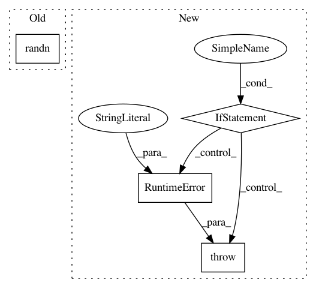

f47e301e50018af3365e3717e3ab1d8e07d297b5,gpytorch/kernels/index_kernel.py,IndexKernel,__init__,#IndexKernel#Any#Any#Any#Any#,7
Before Change
super(IndexKernel, self).__init__()
self.register_parameter("covar_factor", nn.Parameter(torch.randn(n_tasks, rank)),
bounds=covar_factor_bounds)
self.register_parameter("log_var", nn.Parameter(torch.randn(n_tasks)), bounds=log_var_bounds)
def forward(self, i1, i2):
covar_matrix = self.covar_factor.matmul(self.covar_factor.transpose(-1, -2))
After Change
):
if active_dims is not None and len(active_dims) > 1:
raise ValueError(
"Index must be with respect to a single column. Received {}"
.format(active_dims)
)
super(IndexKernel, self).__init__(active_dims=active_dims)
self.register_parameter(
"covar_factor",
nn.Parameter(torch.randn(n_tasks, rank)),
In pattern: SUPERPATTERN
Frequency: 3
Non-data size: 4
Instances
Project Name: cornellius-gp/gpytorch
Commit Name: f47e301e50018af3365e3717e3ab1d8e07d297b5
Time: 2018-03-15
Author: darbour@fb.com
File Name: gpytorch/kernels/index_kernel.py
Class Name: IndexKernel
Method Name: __init__
Project Name: cornellius-gp/gpytorch
Commit Name: effb02b4aa65dc30bd59104437f4b08dee2d76e6
Time: 2018-03-15
Author: darbour@fb.com
File Name: gpytorch/kernels/index_kernel.py
Class Name: IndexKernel
Method Name: __init__
Project Name: Microsoft/nni
Commit Name: bd7edf36a22813c89281adfd8aae29ee59851448
Time: 2020-05-18
Author: 38930155+chicm-ms@users.noreply.github.com
File Name: src/sdk/pynni/tests/test_model_speedup.py
Class Name: SpeedupTestCase
Method Name: test_speedup_bigmodel